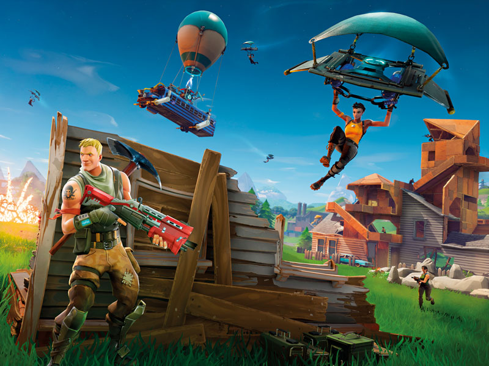

Blog
8-16
Why are video games and games in general so powerful a factor in society?
Video games are a powerful factor in society because they are enjoyable to play, they entertain people and give people goals. It is also a good distraction from the stress of life. It also allows people to interact with people across the country and maybe even the world. It allows me to interact with my friends back in New York.8/18
Why that game? What makes that game fun to play? What genre does it belong to? What makes it unique or more fun to play than other games in that same genre?
I picked retro bowl because it’s a nice mobile game that you can play football, you can draft players that aren’t real. You don’t have to play defense so it’s just all offense. And it’s not too easy as long as you play on a harder mode. It belongs to the sports and simulation genre.8/22
Describe your gaming location. Where do you normally game.
I normally play in my room. I have a pc with 3 monitors and cool LED lights. I also have a PS4 that I sometimes use to play Madden.8/24
Start customizing your blog... add pictures of games you like and write a short review for each game that you added.
Valorant- It is a 5v5 fps shooter game that has different characters with different ability's and different roles. I like valorant because it's a fair balanced game that does a lot of things right. The game has a uniqe and diverse set of guns.
Fortnite- Fortnite battle royale is a 100 player battle royale game that has one thing that makes it unique compared to all the other battle royale games. It has building and editing. Building and editing gives fortnite a high skill gap which leads to a big debate in the fortnite community on wither fortnite should cater to causal's or pros. That is where fortnite misses the mark. They can't do both like valorant or other video games.
Madden- Madden is a football video game that comes out with new games every single year, with updated roasters and the slightest game changes. That is why Madden will never be as good as it could be. They have a monopoly on the football gaming industry. They just update the roaster and slightly make the game better and because they don't have competition the game will never really be as good as it can be.
8/30
What game I am choosing
I am Choosing Fortnite because I know a lot about Fortnite. I know all the good e-sports and players. I know all the mechanics and how to implement them.9/6
What game will you pick for the coaching project What game will you pick for the coaching project
FortniteWhy that game-
I know a lot about that game I've been playing for years and I still some what enjoy it.What do you already know about the game-
I know a lot about that game I play tournaments and stuff like thatWhat do you need to learn to teach/coach that game-
I need to learn how to balance when playing and fighting.How much experience do you have in recording with OBS-
I know a lot about OBS I used to use OBS to stream on twitch, now I use Stream Labs OBS.9/8
Look up your game, find a person using a strategy, Review the video and tell me, what did they do well, what you would do differently than them, what can I do differently when recording/ making clips.
I am watching and ItsJerian video about him playing a late game cup which is a tournament. He won his first game he got height and dropped on the last guy and won. He wasn't that consistent, he took a few unnecessary fights but he won a lot of them. When I'm playing I need to fight more and be more aggressive like he was.9/14
What is the best move to make in the game you are researching
I would say the peanut butter edit is the best and most consistent edit to make.9/21
The article was mainly talking about how esports are growing and becoming more popular and how it's spreading to different places. As of right now I am mostly a Content Creator. I stream on twitch whenever I can. I also am a strategists sometimes. I sometimes help my friends in tournaments if I'm not playing. In the future I might want to become a organizers. I want to host fortnite event/ tournaments.
9/29
What makes a good coach for esports? What do you think you are good at and what do you think you need to work on?
To me what makes a good coach is that they are passionate and wants me to be as successful as I want to be. I would want a coach who will get the best out of me and make me want to follow them in whatever I'm doing. If I want to be a coach in the future for anything I got to learn to be patient and calm when things don't go my way.10/5
When you play a game in your usual area do you sit, stand, lay down, etc? Use a few sentences to describe your gaming location. What sort of gamer snacks and drinks do you consume while playing? How long is a typical session of gaming.
I would play sitting in a chair. I play in my room where I have a desk a pc, 3 monitors, a keyboard and mouse and sometimes I will play on my ps4. I have a mini fridge in my room and I like to put these cans of sparkling water in it. Typically on the weekend I will play for 8 to 9 hours. On the weekdays it depends on if I have homework.
